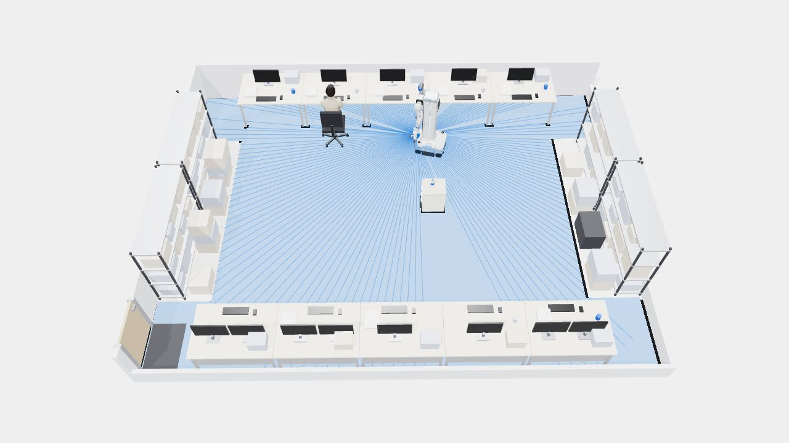
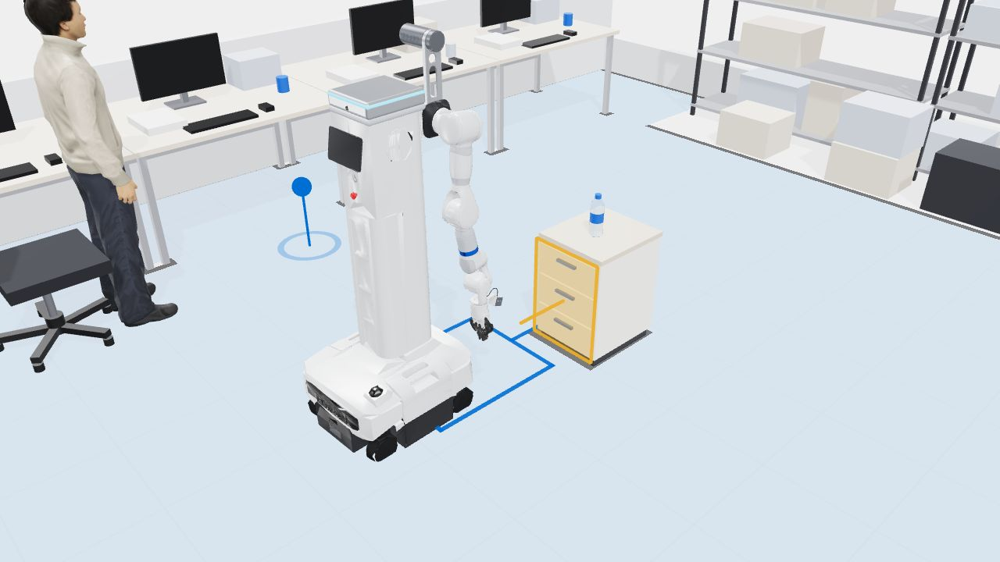
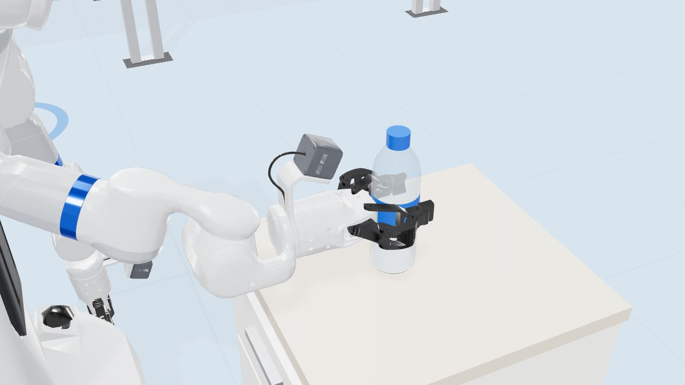
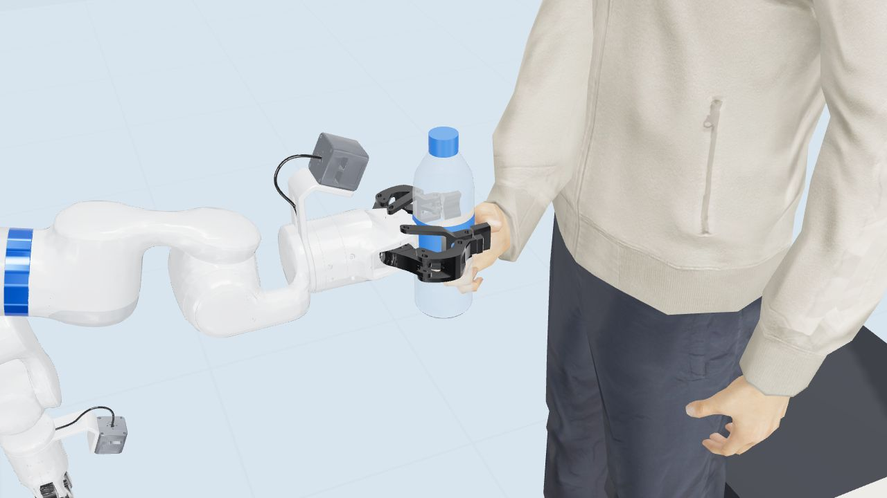

建图与导航
开着转一圈，实验室就成了地图，之后指哪去哪。





演示影片 · 65 秒
按实际任务流程，从建图、识别、对正到递交完整走一遍。
仿真示意，不代表实机性能
认识 i7
i7 是一台轮式双臂移动操作机器人：全向移动底盘、可升降躯干、两条 7 自由度机械臂和平行夹爪，机载 NVIDIA Thor 计算单元。
| 整机结构 | 全向移动底盘 + 升降躯干 + 双 7 自由度机械臂 + 双平行夹爪 |
|---|---|
| 外形尺寸 | 高约 1.76 m（升降到顶，含轮子），底盘约 0.68 × 0.55 m · URDF 网格包围盒估算 |
| 升降 | 行程 1.0 m（肩部可下移 1 m） · URDF 平移关节 −1 ~ 0 m |
| 机械臂 | 每臂 7 个转动关节；肘俯仰 ±139°、腕滚转 ±60°、腕俯仰 −95° ~ +105° |
| 关节力矩上限 | 肩 126 N·m · 肘 85 N·m · 腕 26 N·m · URDF effort 参数 |
| 整机质量 | 约 182 kg · URDF 各连杆质量合计，未实测 |
| 感知 | 3 路相机（头部 + 双腕，RGB 与 Z16 深度流）；底盘激光雷达 · 手册提到左前方雷达罩，模型右后角另有一处同款罩体 |
| 计算 | 机载 NVIDIA Thor；上位机支持 Ubuntu 22.04 / 24.04 · 若为 Jetson AGX Thor T5000：2070 TFLOPS（FP4）、128 GB 内存，型号待厂商确认 |
| 操作入口 | 底盘手柄（USB 接收器）、PICO 头显遥操作、网页与上位机、SSH 终端 |
| 安全 | 急停按钮；拍下后双臂断电，部分姿态下会因重力下垂 |
| 遥操作默认限速 | 0.2 m/s、0.5 rad/s · 配置文件默认值，不是硬件上限 |
数据来源：厂商使用手册 V0.1（2026.6.14）、SDK 手册、URDF V1.5（0416）。标“≈”或“估算”的数值来自模型文件，以实机为准。
支持的功能
i7 本体已具备移动、导航、双臂操作和感知等基础能力，并提供开发接口。
前后、左右平移和原地旋转，支持手柄控制和程序下发速度。
厂商 SLAM 建图与定位，Nav2 运行在 Docker 中，发布 /goal_pose 即可导航。
两条 7 自由度机械臂，支持关节、笛卡尔与力矩控制，夹爪可单独开合。
肩部可上下移动约 1 m，适配不同高度的桌面与取放位置。
多路相机经共享内存读取，Python SDK 在机载 Thor 上运行，提供 RGB 与深度帧。
PICO 头显遥操作双臂；datarecorder 录制 MCAP，可在 Foxglove 回看，也可用作训练数据。
C++ / C / Python 接口，支持实时与非实时模式；可读取关节位置、速度、力矩 tau 和末端位姿，计算正运动学与雅可比。
Demo 目标
以上为建议值，待确认。
不做声源定位和人体检测：返回点就是机器人接令时所在的位置。
方案一览
ROS 2 串起各模块：抓取用 VLA 模型从示教数据中学习，找桌用视觉检测，导航、对正、任务流程和递交松爪用规则方法，便于调试和排查。
唤醒词 + 语音识别，记录当前位姿作为返回点
规则头部相机检测抽屉桌和桌上的水瓶，在桌前生成导航目标
视觉检测厂商 SLAM 定位，Nav2 规划路径到抽屉桌前的目标点
规则深度相机拟合桌子前侧平面，原地转正后前移到抓取距离
规则VLA 读取头部与腕部相机，输出右臂与夹爪动作
VLA · π0.5Nav2 回到返回点，朝向接令的人
规则伸臂等待，关节力矩超过阈值即松爪
规则3D 仿真
与影片使用同一套模型和时间轴。
仓库里另附一份 MuJoCo 场景 docs/showcase/sim/mujoco/i7_lab.xml：厂商 MJCF 模型加上同样布局的实验室、抽屉桌和水瓶，可用来调试抓取与递交逻辑。
pip install mujoco python -m mujoco.viewer \ --mjcf=i7_lab.xml
不是。画面由厂商提供的 URDF V1.5 模型在浏览器里实时渲染，机器人外形、关节结构和运动范围来自模型文件；实验室布局、行驶速度和动作时序是为说明 Demo 目标设计的示意。
抓取要应对瓶子位置、姿态和桌面情况的变化，从示教数据里学比手写规则更省事；导航已有成熟的 Nav2，递交松爪只需要判断一个力矩阈值，用规则更可控，也方便出问题时排查。
机械臂伸出后保持不动，持续读取关节力矩 tau。人拉住瓶子时，腕部关节的力矩偏差会明显上升，超过阈值就松开夹爪。厂商资料里只公开了关节力矩，没有末端力传感器，这个方法需要在 M0 阶段上机实测确认。
不做声源定位和人体检测。机器人在听到指令时记下自己的位姿，取完水后导航回这个位姿，因此下指令的人需要站在机器人旁边。
计划用 PICO 遥操作采集 200–300 条抓取示教，datarecorder 录成 MCAP 后转换成 LeRobot 格式，用 openpi 微调 π0.5，并用 ACT 做基线对比，GR00T N1.5 作为备选。首轮先用约 50 条把管线跑通。
主要是相机内外参、夹爪参数说明、多个程序同时控制机器人时的互斥规则、建图结束后的保存判据，以及 tau 在递交场景下的噪声水平。这些会在 M0 上机盘点时逐项确认。